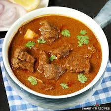

Curry Goat Page

This is a simple and delicious currygoat.
Although it has a lot of ingredients, you won't regret it after making it.
Recipes link to Curry goat
Curry Goat
- 3 ½ pounds baby goat meat, cut into small cubes
- salt to taste
- 3 teaspoons ground turmeric, divided
- 5 tablespoons vegetable oil
<1i>teaspoon white sugar
- 3 medium potatoes, halved
3 pods cardamom
- 4 whole cloves
- 1 (1 inch) piece cinnamon stick
- 3 medium onions, thinly sliced
- green chile peppers, minced
- 4 cloves garlic, minced
- 1 (1 inch) piece minced fresh ginger root
- 2 medium tomatoes, sliced
- ¾ teaspoon chili powder
- 2 ¼ cups water, divided, or as needed
- freshly chopped cilantro
Steps
- Boil the meat in the pot for 30 minutes with spices
- Stir fry garlic, onions chilli peppers until golden brown
- Add tomatos and keep stew until combined
- Add to the boiled meat and stew for another 20 minutes
- Enjoy
Home